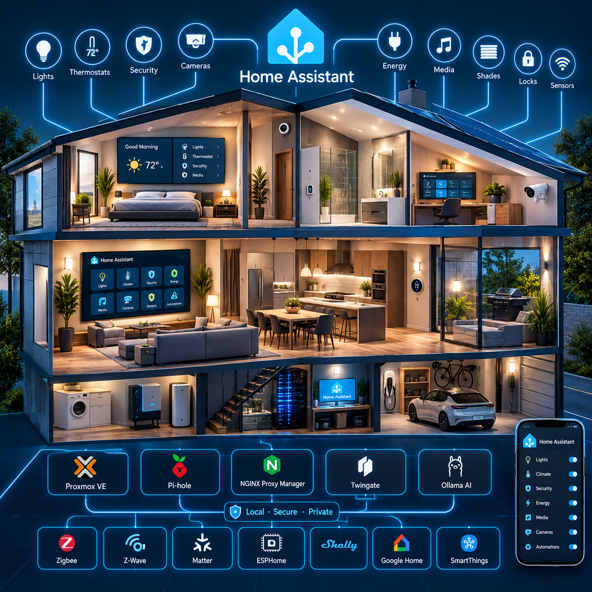
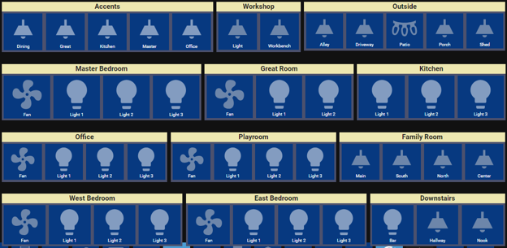
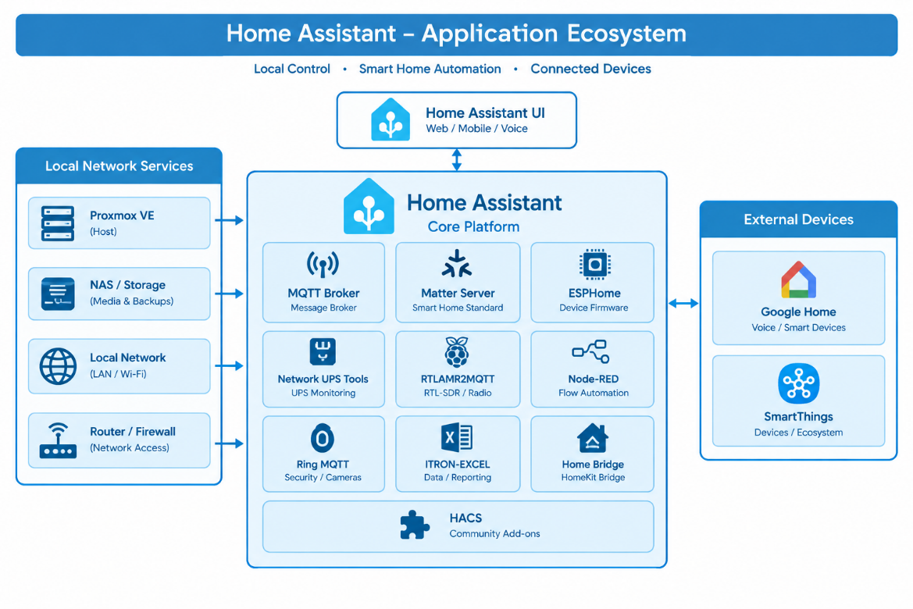

Home Assistant Architectural Design Document (HA ADD)

Purpose
This document defines the architecture, requirements, responsibilities, dependencies, interfaces, supporting services, network boundaries, storage relationships, and operational design surrounding the Home Assistant installation.
The Home Assistant installation is implemented as a Home Assistant OS (HAOS) virtual machine hosted on the Home Lab Compute Module running Proxmox VE 9.2.3.
Home Assistant is intended to serve as the central home-automation platform and, over time, the primary local voice-assistant platform.
The architectural strategy is local-first and cloud-minimized. Services and integrations should operate locally whenever practical. Cloud services remain permitted where they provide required functionality, device compatibility, ecosystem integration, or capabilities that cannot reasonably be reproduced locally.
Architectural Design Goals
The Home Assistant architecture has the following primary goals:
Dependencies
Provide a centralized automation and orchestration platform for the home.
Prefer locally hosted and cloudless services whenever practical.
Minimize unnecessary dependence on external cloud services.
Maintain recoverable Home Assistant configuration backups.
Store Home Assistant backups will go to the Infotainment Module's centralized backup storage.
All network connections thru the Home Router will originate from within the Home Network. No connections are allowed to originate from the outside network - All outside ports shall be closed for external access.
Home Assistant Cloud Services will be used for remote access and client connectivity.
AI, Automation, monitoring and Voice Foundations
Provide a centralized local monitoring and automation of the home environment using local AI models.
Provide a foundation for local AI and local voice processing.
Provide a controlled migration path from Google Home voice control to Home Assistant voice control.
Configurations
Passwords used in Home Assistant shall be located in a separate secrets file and referenced internally through that file.
Blocks of text in the "configuration.yaml" file shall be commented based on their grouping
Example:
#spotify:
client_id: !secret Spotify-Client_ID
client_secret: !secret Spotify-OAuth
Configurations shall be grouped into separate files when it makes sense.
This is to ensure a cleaner "configuration.yaml file" and maintain a mechanism to disable a complete set of configurations with a single comment in the main file.
Example:
script: !include scripts.yaml
Integrations
Maintain interoperability with existing smart-home ecosystems.
Integrate SmartThings devices and capabilities into Home Assistant.
Provide local ESPHome services through the Home Assistant environment.
New satellites will use ESPHome services when possible.
Provide local MQTT services through the Home Assistant environment.
Provide Matter support through the Home Assistant environment.
Provide connectivity for network-connected, Ethernet, Wi-Fi (2.5 and 5GHZ) , Bluetooth, and radio-based devices.
Local-First Design
The preferred architecture is to process and control devices within the home first whenever a reliable local alternative exists.
Rationale: Local processing is preferred because it can provide:
reduced Internet dependency;
improved privacy;
reduced cloud-service dependency;
continued operation during Internet outages;
reduced dependence on vendor APIs;
predictable local network behavior; and
greater control over system configuration and lifecycle.
Cloud services may still be used when required or when their capabilities provide significant value.
Home Assistant as the Central Automation Platform
Home Assistant is the central automation and integration layer.
Rationale: Rather than requiring each device ecosystem to operate independently, Home Assistant provides a common control and automation environment.
External ecosystems such as SmartThings, HomeKit and Google Home are therefore treated as integrations surrounding the Home Assistant core rather than as the architectural center of the system.
All devices will use Home Assistant Integrations if possible.
Rationale: These Integrations may be shared back to Google Home when necessary for current voice integration.
Devices that are permanently installed in the home will connect via SmartThings first.
Rationale: Smart Things is the current Sterling Ranch Smart Home Platform. Because of this any device that is part of the home will connect to SmartThings first and then be shared with Home Assistant and Google thru the perspective SmartThings Integrations. These are usually Z-Wave connected devices like wall switches, motor control switches, and Wi-Fi connected Doorknobs.
There will be 2 SmartThings hub a primary and a backup.
Rationale: Sterling Ranch provides a single AoTech (SmartThings compatible) hub that stays with the house. Due to stability with the Lumiere integration we will maintain a primary SmartThings hub and the AoTech will be used as a backup.
Dashboards
Dashboards will be designed using common Open Source designs.
Support for Kiosk mode Wall Panels is required for interaction with Home Assistant via wall panels. The following are my recommendations for our Home Lab. Yours may differ by preference.
Dashboards will have a dark, blue color scheme.
All pages using kiosk mode will have a top section that displays the date and time.
All pages using kiosk mode will have a bottom section that has buttons that take you to additional subpages.
The bottom buttons will use a grid layout for distributing the buttons across the bottom of the screen.
The bottom buttons will show an active theme (white text, white icon light blue).
The bottom buttons will show an inactive theme (white text, gray icon, on Dark Blue).
The bottom buttons may show an error theme (white text, gray icon on a black background) if the device is in an error state.
There is a possibility (if memory dictates) that in an alert condition may be used (the icon and text will flash Red at a 1 second interval with a black background) indicating an alert status.
The bottom buttons will have a Title at the bottom with an Icon at the top.
Just under the Title block will be a single line that explains what is active with a counter of how many items are in active. For example: "7 On" may indicate there are "7" lights in the "On" state.
All pages using kiosk mode will have a middle section that the functionality of that page. For example: the home page will show a calendar at the right with 3 blocks on the left that displays the weather conditions.
All pages using kiosk mode will have a fixed size and use grid templates to lock the size and locations of each cell.
grid-template-columns: 50px 1240px 45px |
|---|
Common reusable Templates will be used whenever possible.
Non kiosk dashboards
Non kiosk dashboards are used for experimental, development, testing and are only constrained to the themes provided by the system level templates. (Blue based dark mode)
Unused dashboards should be cleaned up when no longer needed or published as a Kiosk Dashboard.
Some default dashboards are for Home Assistant management and cannot be removed.
Rationale: Overview, Energy, Activity, History, ESP Home Builder, HACs, File editor, Matter Server, Node-Red, Settings, Notifications are reserved for System Maintenance and Administration and cannot be removed.
Disk Layout for Dashboards
In order to maintain a standards-based design we will use a predefined disk layout to contain the dashboards and other configuration files used by Home Assistant. These folders are located under the Home Assistant configuration folder on the disk.
Here is the layout that I recommend for the file system. This layout will provide an easy path for migration, maintenance, and design:
/Dashboards |
|---|
Contains main dashboard.yaml, and a directory for each custom dashboard, directory is prefixed with "dash-", with a single dashboard file, located inside (for example (dash-water/water.yaml).
This custom dashboard file will include the following files using a grid layout.
layout: !include ../common/panels/main/layout.yaml |
|---|
From this you can see the pointers to a common template, and a common header and footer.
Common Panels Directory
The panels are used for inclusion in the grid-template-areas mentioned above.
The "common/panels" folder represents the generic reusable set of desktops.
In addition, it points to the specific page in the common area (in this case it was called "/common/panels/main/water". The Water dashboard is a simple design and stops at the Panel level.
Common Cards directory
The "common/cards" area is reserved for sub-pages used within the grid-template-areas. These cards will also be placed within sub level grid areas. This allows for reusability and also helps in design and releases implementation phases.
+---dash-water |
|---|
Water Directory Layout
For most pages we will use the more complex sub grid-template-areas or stack layouts as follows:
Looking at the dashboard for lights.
+---dash-lights |
|---|
Inside the accents yaml file we see that we have broken this down and a bunch of vertical rows. Each row is further broken down as a horizontal row of cells.
type: vertical-stack |
|---|
We also see that when we fill the horizontal stack with objects we will use the include_dir_list entry
Inside the accents.yaml we call the following line:
!include_dir_list ../../cards/accents/lights |
|---|
This line does a directory listing of the cards accent/lights folder and includes all the yaml files in that directory.
In this directory each device contains its own yaml file that is called from this single include line. If we change the line in the accent.yaml file to local_lights we will use the local only connections. This makes migration much simpler. The theory behind this structure is that during page layouts you will find yourself rearranging and reusing things a lot until you get the final production look you want. Instead of editing files to move things you just change the location on the disk.

This is an example of what the final integrated lights panel may look like when using this level of modular design.
By using various levels of integrations like this you can build a set of desktops that carry a similar theme.
Gradual Migration
While the dashboard recommendations above provide a foundation for a basic Dashboard - you should search the web to find the styles that you want in your Dashboards. These were recommendations to maintain your designs while not restricting you to a specific design.
This architecture intentionally supports incremental migration rather than requiring a single replacement event.
Google Home is currently the primary voice controller, but the target architecture is to progressively move voice interaction toward Home Assistant and locally hosted voice services. This permits existing Google Home functionality to remain operational while local voice capabilities are developed and validated. We do not use Alexa or Apple Home services even though they are possible. We maintain the hub for apple home buy just sync everything to it with a few apple only devices.
Preserve Existing Ecosystem Compatibility
Existing devices and ecosystems are not required to be replaced simply because a local alternative is preferred. But speed and performance will play a role when migrating. The desire is to become completely home based. The Test Lab design will allow you to test various desktops side by side to see how things operate together. For example, you may build a local lights desktop and a cloud-based lights desktop. Using cloud based when the internet is avail and using the local based one when the internet is down.
SmartThings remains an important integration source, because it includes its existing Z-Wave capability. Our home came with the SmartThings integration but over the years it has migrated. The initial design used Home Seer. This became obsolete due to the subscription fees and the complexity for integration into the home. Our provider decided to migrate from Home Seer to Smart things about a year ago. This modular Home Assistant design provided a smooth transition to the smart things design.
Home Assistant integrates with SmartThings while providing a common automation and control layer.
We will see more detailed implementation designs and how devices and entities are integrated further into these dashboards.
4. Physical and Virtual Architecture
Home Assistant runs locally on the Home Lab Compute Module.

This design allows the main functions of the Home Lab to be easily integrated into Home Assistant for monitoring, Control and for interacting with the voice AI models.
Local AI Architecture
Ollama is hosted in LXC 103 on the Compute Module.
The service has 6 vCPUs, 16 GB RAM, 40 GB NVMe storage, and Intel integrated GPU passthrough.
The currently documented local models include:
Gemma 3 4B — multimodal/vision;
Phi-4 Mini — reasoning and tool calling;
Qwen 2.5 Coder 7B — automation engineering and code/YAML assistance;
Qwen 2.5 Coder 1.5B — lightweight/local development assistance; and
Nomic Embed Text — vector embeddings and document-context processing.
The architecture is designed to keep AI processing local whenever practical.
5. Home Assistant Network Architecture
Home Assistant participates in two network segments.
5.1 Primary LAN
The primary LAN provides Home Assistant connectivity to most of the home network and its Ethernet and Wi-Fi-connected devices. Additionally, it connects to the Smart Things hub via ethernet for interacting with the Z-Wave devices.
The primary LAN is the normal communication environment for device integrations and services requiring access to the broader home network.
This network is an EERO based Network cloud consisting of 2 EEROs that control most of the network. This Network Cloud supports Dual Band 2.5 and 5Ghz (with 160 MHz channel support in 5 GHz). We used the EERO 6+ due to its availability when we designed this network. It supports speeds up to 1Gbps using 100MHz channel support. Our Primary WAN speed is 1Gbps as well. It supports connections up to Wi-Fi 6.
Our home came with EERO Pro 1st Generation. This modem could not handle the workload of our home, and we immediately upgraded to Google Nest. We had issues with Google Nest since it wanted to control the network and would not allow proper integration with our recommended DNS and DHCP architecture. This drove us to the EERO system and have been happy ever since. We use DHCP from PiHole on the Compute Module. This provides capabilities that remove our in-home management from our provider and place this admin function in our hands. We had issues with failing ISP provided routers and modems that required a complete command line rebuild on replacement. This became a huge hassle, so we integrated with EERO to solve these problems.
We still have 1 simple problem in that some older wifi devices will not connect to Wi-Fi 6. To solve this, we added a single EERO that is not part of the cloud but still a member of the home network. This EERO module is configured to only support 2.5 speeds and a single channel. When these dumb devices try to connect, they try this router 1st. The connection works and they join the network without issues. We still maintain the IPS provided Wi-Fi server as a part of the network, but it is configured as a bridge to the main EERO network just like the separate EERO 2.5 device.
Today, we maintain our current IPS provided smart home design (Wi-Fi Router, and Smart Things Hub) while we integrate all of this safely into our Home Assistant and Home Lab Architecture.
5.2 Isolated Backend Network
In addition to this home Network Cloud, the compute module has an internal backend network for fast communication implemented through Proxmox vmbr1 and communicates without the overhead of the external network.
The backbone network has no gateway/DNS emulation, and its purpose is to provide an isolated backend communication path for selected infrastructure and services.
The Compute Module's Ollama and Wyoming/Open-WebUI environments also participate in this backend network, creating a local service fabric for extremely fast AI and voice processing. The entire compute module can be monitored and controlled via Home Assistant via this backend network without accessing the EERO cloud based network.
Home Assistant Concepts and Terminology
Now that we are discussing Home Assistant, let’s look at the most important concepts. Home Assistant is built around a small set of building blocks: integrations, devices, entities, areas, and automations. Once you understand how they fit together, the rest of the platform falls into place.
Integrations
Integrations are pieces of software that allow Home Assistant to connect to other software and platforms. For example, a product by Philips called Hue would use the Philips Hue integration and allow Home Assistant to talk to the hardware controller Hue Bridge. Any Home Assistant compatible devices connected to the Hue Bridge would appear in Home Assistant as devices.
Devices
Devices are a logical grouping for one or more entities. A device may represent a physical device, which can have one or more sensors. The sensors appear as entities associated with the device. For example, a motion sensor is represented as a device. It may provide motion detection, temperature, and light levels as entities. Entities have states such as detected when motion is detected and clear when there is no motion.
Devices and entities are used throughout Home Assistant. To name a few examples:
Dashboards can show a state of an entity. For example, if a light is on or off.
An automation can be triggered from a state change on an entity. For example, a motion sensor entity detects motion and triggers a light to turn on.
A predefined color and brightness setting for a light can be saved as a scene.
Entities
Entities are the basic building blocks to hold data in Home Assistant. An entity represents a sensor, actor, or function in Home Assistant. Entities are used to monitor physical properties or to control other entities. An entity is usually part of a device or a service. Entities have states.
Areas
An area in Home Assistant is a logical grouping of devices and entities that are meant to match areas (or rooms) in the physical world: your home. For example, the living room area groups devices and entities in your living room. Areas allow you to target actions at an entire group of devices. For example, turning off all the lights in the living room. These are locations within your home, such as the living room or the dance floor. Areas can be assigned to floors. Areas can also be used for automatically generated cards, such as the Area card.
Automations
A set of repeatable actions that can be set up to run automatically. Automations are made of three key components:
Triggers - events that start an automation. For example, when the sun sets or a motion sensor is activated.
Conditions - optional tests that must be met before an action can be run. For example, if someone is home.
Actions - interact with devices such as turn on a light.
Scripts
Similar to automations, scripts are repeatable actions that can be run. The difference between scripts and automations is that scripts do not have triggers. This means that scripts cannot automatically run unless they are used in automationsAutomations in Home Assistant allow you to automatically respond to things that happen in and around your home. [Learn more]. Scripts are particularly useful if you perform the same actions in different automations or trigger them from a dashboard. For information on how to create scripts, refer to the scripts documentation.
Scenes
Scenes allow you to create predefined settings for your devices. Similar to a driving mode on phones, or driver profiles in cars, it can change an environment to suit you. For example, your watching films scene may dim the lighting, switch on the TV and increase its volume. This can be saved as a scene and used without having to set individual devices every time.
Apps
Apps are third-party applications that provide additional functionality in Home Assistant. Apps run directly alongside Home Assistant, whereas integrations connect Home Assistant to other apps. Apps are only supported when using Home Assistant Operating System.
Apps are installed from the app store under Settings > Apps. If you are curious now and feel like installing every app that looks interesting: beware that apps can use quite a bit of resources in terms of disk space, memory, and additional load on the processor.
Home Assistant Service Responsibilities
Home Assistant acts as a centralized, open-source brain for the smart home. Unlike big-tech ecosystems like Google Home, Smart Things, Home Seer, Amazon Alexa, or Apple HomeKit, Home Assistant unifies completely different brands, offers unmatched automation capabilities, and keeps user data entirely private.
As we can see from previous sections, Home Assistant can provide Tailored interfaces that use Drag-and-drop dashboards that allow users to design unique views for mobile phones, wall-mounted tablets, or less-technical household members.
Home Assistant uses the Open-source community to integrate with a vast global developer community that is continuously creating free updates, fixes bugs, and designing new integrations. This section focuses on how we integrate with this community using Open-Source Applications.

The current architecture includes or references the following applications:
Home Assistant automation |
|---|
The exact configuration of these services is maintained within the Home Assistant configuration and supporting configuration files.
Ecosystem Integrations
Home Assistant Core & Interface
These are the integrations and components that provide Home Assistant's core operating environment, user interface, dashboards, and general system functions.
| Integration | Description |
|---|---|
| Home Assistant Supervisor | Manages the Home Assistant operating environment, including add-ons, updates, backups, system health, and core services when running Home Assistant OS. |
| HACS | Home Assistant Community Store. Provides access to community-developed integrations, frontend cards, themes, dashboards, and other custom components. |
| Lovelace Gen | Provides tools or functionality for generating/managing Lovelace dashboard configuration and UI elements. |
| Mobile App | Connects Android and iOS devices to Home Assistant, providing sensors, device tracking, notifications, actionable notifications, and remote control. |
| Browser Mod | Extends Home Assistant's browser-based frontend with browser-specific controls, pop-ups, services, navigation, and device-level functionality. |
| Fully Kiosk Browser | Integrates Android kiosk devices/tablets with Home Assistant, allowing Home Assistant dashboards to operate as dedicated wall-mounted control panels. |
| Android TV Remote | Provides remote-control functionality for compatible Android/Google TV devices. |
Smart Home Protocols & Device Connectivity
These form the device communication layer of the Home Assistant system.
| Integration | Description |
|---|---|
| MQTT | Lightweight publish/subscribe messaging protocol commonly used to connect sensors, devices, automation systems, and other services to Home Assistant. |
| Matter | Modern standardized smart-home protocol designed for interoperability between manufacturers and platforms. |
| Thread | Low-power IPv6 mesh networking technology used by Matter and other smart-home devices. |
| Bluetooth | Allows Home Assistant to discover and communicate with nearby Bluetooth devices, sensors, beacons, and accessories. |
| ESPHome | Connects ESP32/ESP8266-based devices programmed with ESPHome, allowing custom sensors, switches, displays, relays, and other hardware to become native Home Assistant devices. |
| iBeacon Tracker | Detects Bluetooth iBeacon transmitters and uses their presence/location information within Home Assistant. |
| Local Tuya | Provides local control of compatible Tuya devices without relying exclusively on Tuya's cloud infrastructure. |
| SmartThings | Connects Samsung SmartThings devices and ecosystems to Home Assistant. |
| VeSync | Connects compatible VeSync smart-home products such as outlets, appliances, air-quality devices, and other IoT equipment. |
Media, Entertainment & Home Theater
These integrations control entertainment systems and media playback.
| Integration | Description |
|---|---|
| Apple TV | Controls Apple TV devices and exposes media playback information and controls to Home Assistant. |
| Emby | Connects Home Assistant to an Emby media server and provides information about media playback and server activity. |
| Denon AVR Network Receivers | Controls compatible Denon network-connected AV receivers, including power, volume, source selection, and other receiver functions. |
| Denon HEOS | Connects Home Assistant to the HEOS multi-room audio platform for controlling speakers, receivers, playback, and audio zones. |
| Google Cast | Allows Home Assistant to control Chromecast and Google Cast-compatible devices and media players. |
| Samsung Smart TV | Controls compatible Samsung televisions and provides media/player information. |
| VIZIO SmartCast | Provides control and status information for compatible VIZIO SmartCast televisions. |
| Ring | Provides access to Ring cameras, doorbells, sensors, and related security information. |
| Roborock | Connects Roborock robot vacuums to Home Assistant for control, status, cleaning commands, maps, and sensors. |
7.1 SmartThings
SmartThings is an external smart-home ecosystem integrated with Home Assistant that currently provides access to devices and capabilities that remain within the SmartThings ecosystem. It also contains access to the existing Z-Wave infrastructure.
7.2 Google Home
Google Home is currently the primary voice-control system and Home Assistant integrates with the Google Home ecosystem and receives/coordinates information associated with the existing Google environment.
The architectural direction is to progressively migrate voice control toward Home Assistant. It is possible to have both implementations run simultaneously since the key activation words are different. It is possible to have the two voice systems interact with each other to migrate some functionality to a single voice system.
Local Voice Architecture
The Compute Module provides local voice-processing services through the Wyoming/Open-WebUI environment.
The voice architecture includes:
Wyoming-Piper;
Wyoming-Whisper; and
Open-WebUI.
The Wyoming services are hosted within LXC 104, which has 2 vCPUs, 2 GB RAM, and access to persistent Piper, Whisper, and Open-Web UI data through centralized storage mounts. These services are available to Home Assistant via the backend network for speed and performance reasons.
Matter Architecture
Home Assistant provides capabilities to access the Matter Server environment. Matter devices are intended to communicate through the Home Assistant architecture rather than requiring an independent cloud automation platform. The exact Matter/Thread radio hardware and Thread border-router topology remain an architecture detail to be documented in the integration guide.
MQTT Architecture
Home Assistant provides access to the MQTT server/broker environment. MQTT is treated as a local messaging infrastructure component supporting devices and services that communicate through MQTT. The detailed broker configuration, authentication model, retained-message policy, persistence configuration, and client inventory should be documented separately as the MQTT architecture is finalized in the integration guide.
ESP Home Architecture
Home Assistant serves as the ESP Home environment for locally managed ESP-based devices. ESP Home is consistent with the local-first architectural strategy because device firmware and device communication can remain under local control. ESP Home devices should therefore be preferred where they provide an appropriate local alternative to cloud-dependent vendor devices and a Off-The-Shelf device is not available. Some Off-The-Shelf devices like Garage Door Openers require a monthly subscription. This is a perfect example where an ESP Home solution is preferred.
Envisalink (DSC) Architecture
Envisalink is implemented as a Home Assistant integration. It is therefore considered an integration endpoint rather than an independent Home Assistant server or infrastructure node. The integration provides Home Assistant access to the associated alarm/security system state.
DSC services are provided in out home and this Application provides a capability to integrate these services within Home Assistant. EnvisaLink works in conjunction with Eyes-On Hardware to communicate with the DSC Panel.
Local Tuya Strategy
Local Tuya is part of the local-first strategy where compatible Tuya devices can be controlled locally. Local communication is preferred over unnecessary reliance on the Tuya cloud. Device-by-device compatibility must be validated before migration because not every Tuya device necessarily provides equivalent local functionality. Some light are limited to what the local integration provides but more functionality is coming out every day.
Camera and Surveillance Boundary
The surveillance architecture is intentionally separate from Home Assistant's primary infrastructure and is discussed in detail in a different hub. Cameras are directly connected through two 8-port PoE Ethernet switches to a Synology surveillance system. The Synology system is responsible for the primary surveillance/camera-management function.
Home Assistant consumes camera state, streams, or events where required, and the surveillance system itself is not dependent on Home Assistant for its primary recording function. This separation reduces the impact of a Home Assistant outage on surveillance recording.
Storage and Backup Architecture
Home Assistant requires persistent configuration backups. The designated centralized backup destination is located on the Infotainment Module. The Infotainment Module provides an LXC 100 Samba-NAS storage gateway. Its backup hierarchy includes "home lab-backups/configs/compute-node/haos/". This mount is not persistent, which means that an outage of either system will not cause the other system to fail. If the Infotainment system is rebooted the Home Assistant and the Compute nodes will remain totally functionable.
This location is specifically designated for automated Home Assistant configuration backups. The broader backup structure also includes configuration backups for Open-Web UI and Pi-hole, while the Infotainment node maintains database dumps, NGINX configuration, and Docker stack configuration.
Relationship to the Infotainment Module
Home Assistant is hosted on the Compute Module, while centralized persistent storage and backup services are hosted on the separate Infotainment Module.
The Infotainment Module runs its own Proxmox VE 9.2.3 environment and provides centralized storage through Samba-NAS LXC 100. It also hosts media, document, photo, database, download, and other application services.
This creates a two-node architecture:
Compute Module
Home automation, AI, voice, DNS, reverse proxy, and remote-access services.
Infotainment Module
Centralized storage, media, documents, photos, databases, backups, and supporting applications.
Cloud Dependency Strategy
Cloud services are permitted but are not the preferred architectural dependency.
The preferred hierarchy is:
Local device control.
Local Home Assistant integration.
Local supporting service.
Local AI/voice processing.
Cloud integration where local operation is unavailable or impractical.
Cloud services should therefore be treated as explicit architectural dependencies rather than invisible assumptions.
For every major integration, the designer should eventually identify:
whether local control exists;
whether cloud access is required;
what functionality is lost without the cloud;
whether the integration can continue during an Internet outage; and
whether a future local replacement is practical.
Review of Benefits gained by using the Home Assistant Architecture in our Smart Home
1. Privacy and Local Control
Data ownership: It stores all history, logs, and device configurations locally on the user's hardware rather than uploading them to external cloud servers.
Offline reliability: Smart homes continue running automations and taking commands even if the internet goes down.
No forced obsolescence: Users avoid the risk of a manufacturer suddenly shutting down its cloud service and bricking working hardware. [1, 2, 3, 4]
2. Complete Vendor Independence
Massive integration library: It supports thousands of different smart home devices and online services.
Unified dashboard: Users can eliminate a dozen different brand-specific apps and control everything—from Philips Hue lights and Sonos speakers to solar panel invertors—under a single interface.
Hardware bridging: It allows non-Matter or older legacy devices to interact seamlessly with newer protocols. [1, 2, 3, 4, 5]
3. Hyper-Advanced Automations
Complex logic: Users can build intricate conditions that outclass off-the-shelf apps. For example, a house can automatically unlock doors and turn on specific lights only when a shared calendar indicates a house cleaner is scheduled. [1, 2]
Diverse triggers: It can trigger routines based on power drops (like a washing machine finishing its cycle), geolocation, weather changes, or time of day. [1, 2]
4. Customization and Community
Tailored interfaces: Drag-and-drop dashboards allow users to design unique views for mobile phones, wall-mounted tablets, or less-technical household members.
Open-source community: A vast global developer community continuously creates free updates, fixes bugs, and designs new integrations. [1, 2, 3]
Resilience and Failure Boundaries
The architecture intentionally separates several functions.
Home Assistant failure
Some Automation and HA-dependent integrations may become unavailable, but independent services such as Synology surveillance should continue operating.
Internet failure
Local Home Assistant services should remain available where the underlying devices and integrations support local operation.
Cloud-dependent integrations may become unavailable.
Infotainment Module failure
Centralized storage and backup destinations become unavailable.
Home Assistant's local operation should not be unnecessarily dependent on the Infotainment Module for its core runtime.
Compute Module failure
Home Assistant, local AI, local voice, DNS, reverse proxy, and other Compute Module services become unavailable.
The backup architecture is intentionally located on the separate Infotainment Module to reduce the risk of losing backups with the failed compute host and may be used to provide recovery methods from the saved backups.
References and Authoritative Resources
Home Assistant Core Architecture & Components
Home Assistant Architecture Overview
Publisher: Home Assistant Project
URL: https://www.home-assistant.io/introduction/
Home Assistant Supervisor
Publisher: Home Assistant Project
URL: https://www.home-assistant.io/integration/supervisor/
Home Assistant Operating System
Publisher: Home Assistant Project
URL: https://www.home-assistant.io/installation/
Hass.io & Docker Containerization
Hass.io Add-on Store
Publisher: Home Assistant Project
URL: https://www.home-assistant.io/add-ons/
Docker Container Management
Publisher: Docker Documentation
URL: https://docs.docker.com/engine/reference/run/
Container Orchestration with Supervisor
Publisher: Home Assistant Community
URL: https://developers.home-assistant.io/docs/add-ons/
Smart Home Integration & Protocols
Matter Smart Home Standard
Publisher: Connectivity Standards Alliance
URL: https://csa-iot.org/all-solutions/matter/
Zigbee Integration Documentation
Publisher: Zigbee Alliance
Z-Wave Integration
Publisher: Z-Wave Alliance
URL: https://zwavealliance.org/
Voice Assistants & AI Integration
Home Assistant Voice Integration
Publisher: Home Assistant Project
URL: https://www.home-assistant.io/integrations/voice/
Google Assistant Integration
Publisher: Google Developers
URL: https://developers.google.com/assistant/
Amazon Alexa Integration
Publisher: Amazon Developer
URL: https://developer.amazon.com/docs/alexa/understanding-amazon-alexa-skills.html
Security & Network Architecture
Home Assistant Security Best Practices
Publisher: Home Assistant Project
URL: https://www.home-assistant.io/docs/security/
TLS/SSL Configuration
Publisher: Mozilla SSL Configuration Generator
URL: https://ssl-config.mozilla.org/
Network Segmentation for IoT
Publisher: Cisco Networking Academy
URL: https://www.netacad.com/courses/iot-security
Scalability & Performance
Home Assistant Performance Tuning
Publisher: Home Assistant Project
URL: https://www.home-assistant.io/docs/performance/
Database Optimization (MariaDB/PostgreSQL)
Publisher: MariaDB Foundation
URL: https://mariadb.org/kb/optimization/
High Availability Configuration
Publisher: Home Assistant Project
URL: https://www.home-assistant.io/docs/configuration/ha/
Industrial & Enterprise IoT
Industrial IoT Architecture
Publisher: IoT Analytics
URL: https://www.iot-analytics.com/industrial-iot/
Smart Home Interoperability
Publisher: Apple Developer Documentation
URL: https://developer.apple.com/homekit/
Matter Device Certification
Publisher: Connectivity Standards Alliance
URL: https://csa-iot.org/certification/
Additional Resources
Home Assistant Community Forums
Publisher: Home Assistant Community
URL: https://community.home-assistant.io/
Home Assistant Blog
Publisher: Home Assistant Project
URL: https://www.home-assistant.io/blog/
Home Assistant Discord
Publisher: Home Assistant Community
URL: https://discord.gg/homeassistant
Smart Home Device Security
Publisher: NIST Cybersecurity Framework
URL: https://www.nist.gov/cyberframework
IoT Device Management
Publisher: Linux Foundation (EdgeX Foundry)